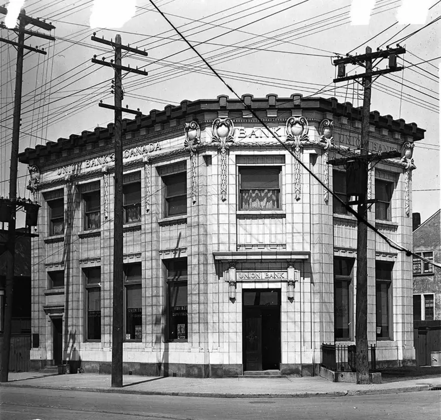
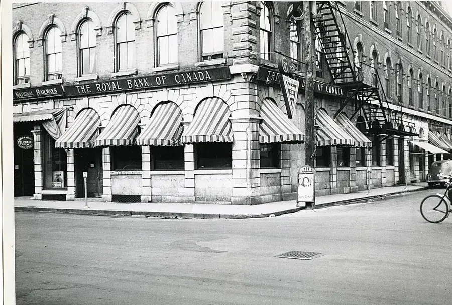

대표 로고대표 브랜드 마크
대표 로고대표 브랜드 마크RBC 은행 Royal Bank of Canada
RBC 은행(Royal Bank of Canada)은 캐나다의 다국적 금융 서비스 기업이다. 시가총액 기준 캐나다 최대 은행이며, 1864년 노바스코샤주 핼리팩스에서 출발한 금융기관이다.
최종 업데이트
RBC 은행은 어떤 브랜드인가
RBC는 캐나다에 기반을 둔 다국적 금융 서비스 기업이며 시가총액 기준 캐나다 최대 은행이다. 개인·기업 금융, 투자은행, 증권 중개, 보험 등을 제공하며 19 million 이상의 고객과 101,000명 이상의 직원을 두고 있다.
본사는 토론토에, 본점은 몬트리올에 있고 기관 번호는 003이다. 2017년 11월 Financial Stability Board의 글로벌 시스템적 중요 은행 목록에 추가되었다.
2023년에는 Forbes Global 2000에서 38위에 올랐다. 2024년에는 HSBC의 캐나다 사업을 인수하며 사업을 넓혔다.
RBC 은행은 어떻게 시작되고 성장했나
1864년 노바스코샤주 핼리팩스에서 Merchants Bank of Halifax로 설립되었으며, 어업과 목재업, 유럽 및 카리브해 수출입 사업에 자금을 대는 상업은행이었다. 1869년 정식 법인이 되어 연방 인가를 받았고, 1870~1880년대에 다른 Maritime Provinces로 영업망을 넓혔다.
1901년 Royal Bank of Canada로 이름을 바꿨고 1907년 본점을 핼리팩스에서 몬트리올로 옮겼다. 이후 1910년 Union Bank of Halifax, 1912년 Traders Bank of Canada, 1917년 Quebec Bank, 1918년 Northern Crown Bank, 1925년 Union Bank of Canada와 합병하며 성장했다.
1961년에는 캐나다 은행권 최초로 컴퓨터 IBM 1401을 설치했다.
RBC 은행의 브랜드 아이덴티티는 무엇인가
시가총액 기준 캐나다 최대 은행으로, 캐나다·미국·카리브해에 걸친 사업망과 글로벌 시스템적 중요 은행 지정이 특징이다.
RBC 은행의 대표 제품과 서비스는 무엇인가
캐나다 내 개인·기업 금융은 영어로 RBC Royal Bank, 프랑스어로 RBC Banque Royale라는 이름을 쓰며, 1,263개 지점을 통해 약 11 million 고객을 상대한다. 미국 자회사 RBC Bank는 과거 남동부 6개 주에서 439개 지점을 운영했으나 지금은 캐나다 여행자와 해외 거주자를 위한 국경 간 금융 서비스만 제공한다.
로스앤젤레스에 기반을 둔 City National Bank는 미국 11개 주에서 79개 지점을 운영한다. 카리브해 17개국에는 127개 지점이 있다.
RBC Capital Markets는 투자은행·기업금융 자회사이고, 증권 중개는 RBC Dominion Securities가 맡는다.
RBC 은행은 지금 어떤 상태인가
2025년 기준 운용자산은 CA$1.574 trillion이며, 캐나다와 다른 28개국에서 사업을 운영한다. 2024년에는 HSBC의 캐나다 사업을 인수해 사업을 확장했다.
2011년에는 매출과 시가총액 기준으로 캐나다 최대 기업이었고, 2023년 Forbes Global 2000에서 38위를 기록했다.
RBC 은행 로고는 어떻게 변해왔나
대표 로고대표 브랜드 마크사진으로 보는 RBC 은행의 역사


자주 묻는 질문
RBC 은행는 어느 나라 브랜드인가요?
RBC 은행는 캐나다의 금융 브랜드입니다.
RBC 은행는 언제 설립되었나요?
RBC 은행는 1864년 설립되었습니다.
RBC 은행의 브랜드 아이덴티티는 무엇인가요?
시가총액 기준 캐나다
RBC 은행는 현재 어떤 상태인가요?
2025년 기준 운용자산은 CA$1.574 trillion이며, 캐나다와 다른 28개국에서 사업을 운영한다.
RBC 은행의 본사는 어디에 있나요?
RBC 은행의 본사는 Royal Bank Plaza에 있습니다(위키데이터 기준).
RBC 은행의 공식 웹사이트는 어디인가요?
RBC 은행의 공식 웹사이트는 https://rbc.com 입니다.
출처와 검증
RBC 은행 관련 참고: 공식 웹사이트 · 위키데이터 Q735261 · 한국어 위키백과 · 영어 위키백과. 브랜드명은 한글과 원어를 함께 표기하되 데이터에 없는 표기는 만들지 않습니다. 기원 국가·설립연도는 검수된 정의문에서 확인된 값을 우선하고, 없을 때만 공식 웹사이트 URL이 일치하는 위키데이터 개체의 값을 씁니다. 위키데이터 값은 2026-11-11 기준입니다.